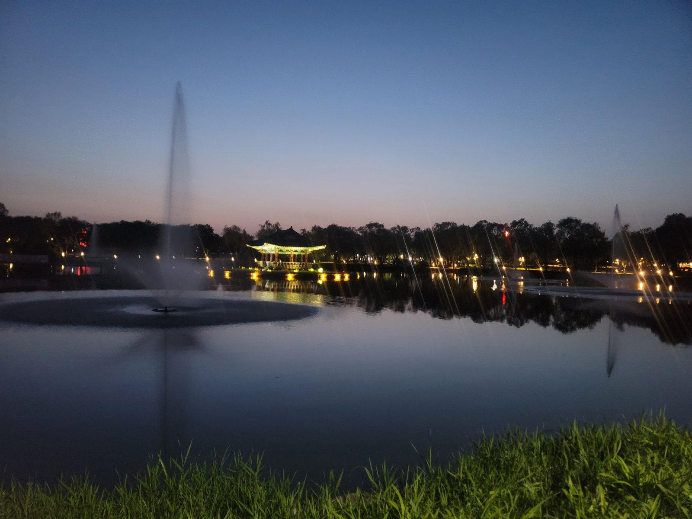
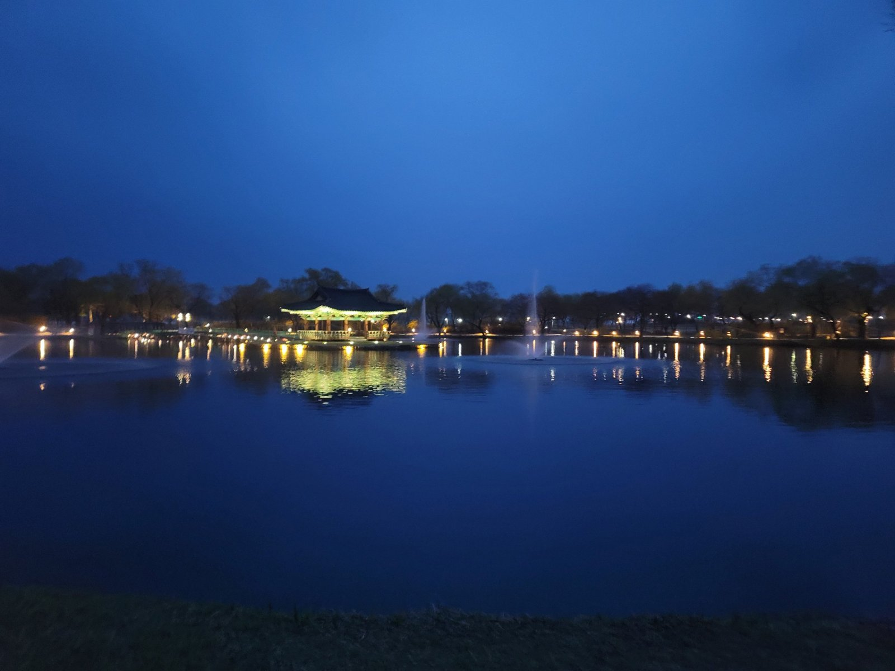
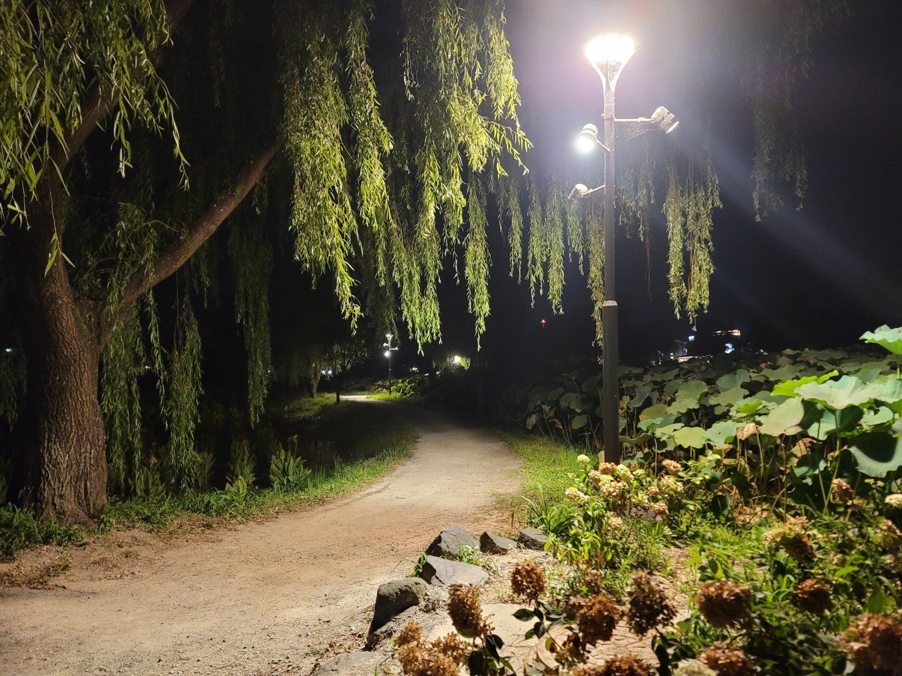
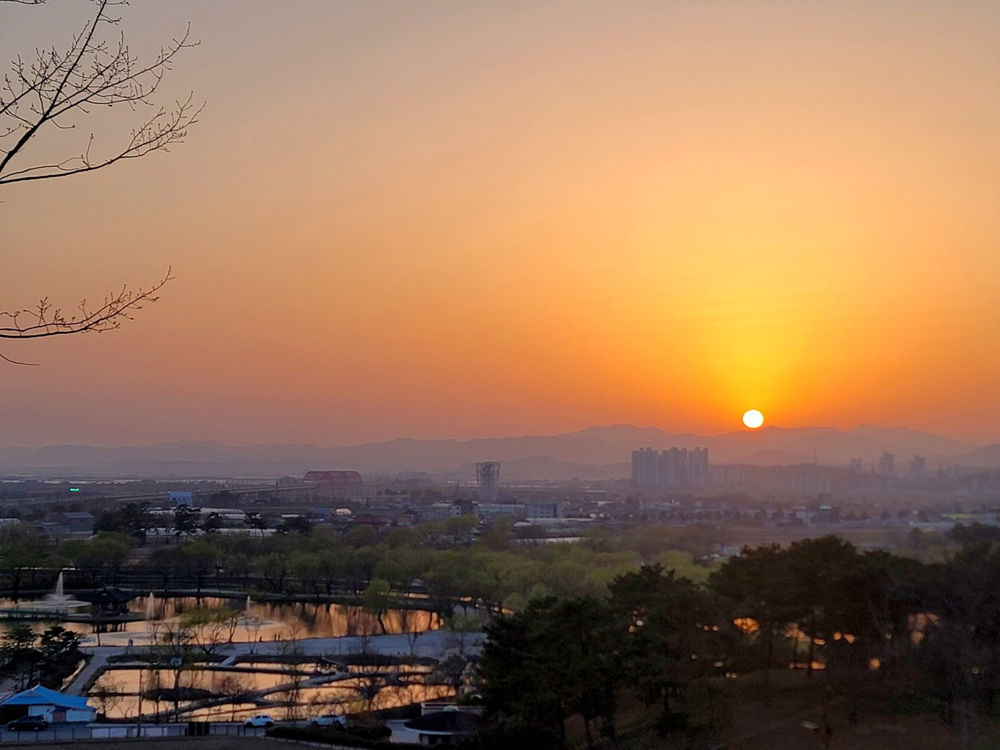

Gungnamji is a wide, quiet pond on the southern edge of Buyeo, a small town in South Chungcheong that was once the last capital of the Baekje kingdom. Willow trees lean over the water, a wooden bridge leads to a pavilion on a little island, and in summer the fields around it fill with lotus flowers. It is one of my favourite places for an evening walk, and it is far less crowded than the famous sights of Gyeongju or Seoul.
A pond from the 7th century
Gungnamji is usually described as Korea's oldest man-made pond. The Samguk sagi, Korea's oldest surviving history, records that King Mu of Baekje had a pond dug south of his palace in 634, with willows planted along its banks and an island in the middle. The pond you see today was restored in the 1960s, and the pavilion on the island, Poryongjeong, is a modern building in the traditional style, reached by a wooden bridge.
The pond is also tied to one of Korea's best-known love stories. Legend says King Mu, as a boy called Seodong ("yam boy"), was the son of a widow and the dragon of this pond. He went to the rival kingdom of Silla and won the hand of Princess Seonhwa with a cheeky song. That is why you will see the name Seodong everywhere in Buyeo, from the park to the summer festival.

When to go
- July: the lotus season. The lotus ponds around Gungnamji bloom from late June into August, and the Buyeo Seodong Lotus Festival is usually held in July, with music, lantern displays and night events. Mornings are best for the flowers, which close up in the midday heat. Check our festival calendar for this year's dates.
- Spring: the willows turn bright green in April, and evenings are mild.
- Autumn: clear skies and golden willows, with fewer people than in summer.
- Any evening: the pavilion, bridge and paths are lit after dark, and the reflections on still nights are the best reason to stay late.

What to do there
Walk around the pond
A level path circles the main pond, and smaller paths wander between the lotus ponds and willow avenues around it. A slow loop takes 30 to 60 minutes. Cross the wooden bridge to Poryongjeong for the classic view back across the water.
Stay for the night views
After dark the pavilion glows, the willows are lit from below and the paths stay open for evening walks. In summer, the lotus leaves along the paths make it feel like walking through a green tunnel.

Watch the sunset from above
For a wider view, walk up one of the low hills on the edge of the park around sunset. You look down over the ponds, the town and the river plain to the hills beyond.

Getting there
Buyeo has no train station; most visitors come by intercity or express bus. Buses from Seoul take about two to two and a half hours, and there are connections from Daejeon and Gongju. Gungnamji is on the southern side of town, a short taxi ride or roughly a 20-minute walk from the Buyeo bus terminal. Check current bus times on Naver Map or KakaoMap. Entry to the park has generally been free, and there is parking nearby, which fills up during the lotus festival.
Make a day of it in Buyeo
Buyeo was the capital of Baekje from 538 to 660, and several sites in and around the town are part of the UNESCO-listed Baekje Historic Areas. Easy additions to a visit to Gungnamji:
- Jeongnimsa Temple site: a five-storey stone pagoda from the Baekje period, in the middle of town.
- Busosanseong Fortress and Nakhwaam: a wooded hill fortress above the Baengma River, with a cliff tied to the fall of Baekje. A short river boat ride runs below it.
- Buyeo National Museum: home to the Gilt-bronze Incense Burner of Baekje, one of Korea's great treasures.
Buyeo is small and quiet in the evening, so many people visit as a day trip, or combine it with Gongju, the earlier Baekje capital about 40 minutes away. For more ideas, see our best time to visit Korea guide and Korea in July.
FAQ
When do the lotus flowers bloom at Gungnamji?
From around late June into August, at their best in July, when the Buyeo Seodong Lotus Festival is usually held. Go in the morning, when the flowers are open.
Is Gungnamji worth visiting at night?
Yes. The pavilion, bridge and willow paths are lit after dark, and on calm evenings the reflections on the water are beautiful.
How do I get to Gungnamji from Seoul?
Take an intercity or express bus to Buyeo, about two to two and a half hours, then a short taxi ride or a 20-minute walk from the bus terminal.